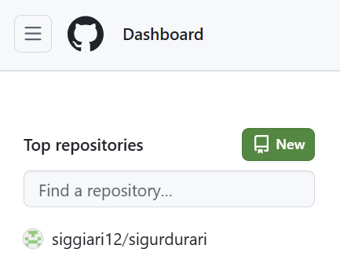
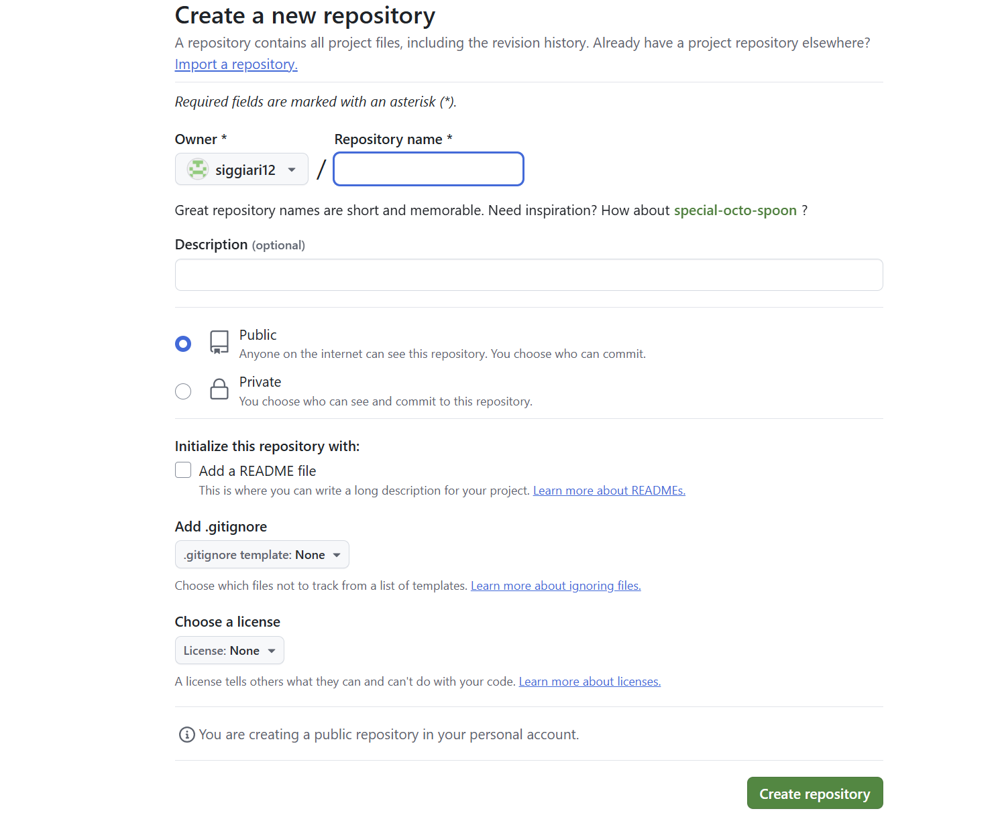

Að hanna vefsíðu sem á að hýsa vinnuframlagið mitt í áfanganum.
Í upphafi verkefnssins fór ég á HTML5 UP í leit að góðu sniðmáti til byggja vefsíðuna á. Þar var sniðmátið Solid State fyrir valinu þar sem það var snyrtilegt og þægilega uppbyggt. Næst var Brackets hlaðið niður, forritið býður upp á live HTML editing functionality svo hægt var að umbreyta sniðmátinu og fylgjast með vefsíðunni breytast í rauntíma. Þetta er þægilegur eiginleiki sem auðveldar forritunarvinnuna talsvert.
Ég lenti á smá vegg þegar ég opnaði sniðmátið í Brackets því live preview eiginleikinn var ekki að virka. Eftir að skoða þetta betur hlóð ég niður öðru forriti sem er byggt á Brackets og heitir Phoenix Code. Þetta forrit er nánast alveg eins og Brackets og virkaði mjög vel fyrir mig.
Fyrst hlóð ég niður sniðmátinu, bjó til möppu á tölvunni sem ég kallaði Vefsíða og færði öll gögnin inn í hana. Næst opnaði ég möppuna með Phoenix Code og byrjaði að fikta. Þegar ég byrjaði á þessu verkefni hafði ég enga reynslu á því að kóða í HTML en þar sem ég hafði tilbúið sniðmát, live editing og internetið var það auðveldara en ég átti von á. Ég byrjaði á því að fínpússa forsíðuna, tók út allt það sem ég ætlaði ekki að nota og skrifaði stutta kynningu á mér undir Um mig. Þar bætti ég við prófíl mynd og setti inn ferilskránna mína og smá contact info.
Næst á dagskrá var að birta heimasíðuna á Github. Þar bjó ég mér til aðgang og fór svo að búa til vefslóð fyrir vefsíðuna mína.
Þegar ég hafði búið til aðgang fór ég upp í hægra hornið hjá Top Repositories smellti á New:
Næst opnaðist gluggi sem leit svona út:
Hér valdi ég nafn fyrir síðuna og hakaði við Public svo að ég gæti birt hana öðrum. Að lokum smellti ég á Create repository.
Ég sótti Git Bash á tölvuna mína og opnaði svo möppuna Vefsíða með Git Bash með því að hægri smella á möppuna og velja